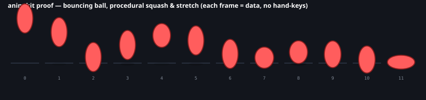
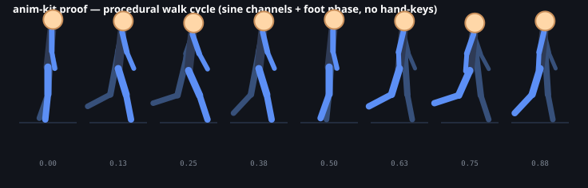
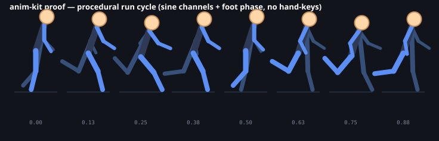
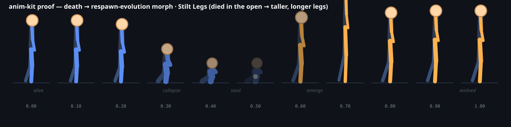

AXM · MOTION LEGO · TEST CANDIDATE
Movement the game builder can understand.
Ten deterministic blocks for game feel, locomotion and directed respawn. The source math stays portable; the Workshop adapter keeps runtime and visual claims honest.
Source proof filmstrips
These prove that deterministic samples render into readable frames. They do not prove final in-game appearance.




The honest seam
axm.procedural-motion/v1 blocks can feed the animation spine as semantic inputs now. They are not the same as the existing bounded skeletal animation/clip+json; a skeleton/channel adapter is still required for that route.